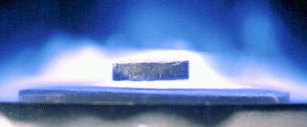
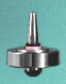

Updated 1997 by PEG.
Original by Philip Gibbs and Andre Geim, 1997.
A theorem due to Earnshaw proves that it is not possible to achieve static levitation using any combination of fixed magnets and electric charges. Static levitation means stable suspension of an object against gravity. But there are a few ways to levitate by getting around the assumptions of the theorem. In case you are wondering, none of these can be used to generate anti-gravity or to fly a craft without wings or jets.
The proof of Earnshaw's theorem is very simple if you understand basic vector calculus. The static force as a function of position F(x) acting on any body in a vacuum due to gravitation, electrostatic, and magnetostatic fields will always be divergence free: div F = 0. At a point of equilibrium, the force is zero. If the equilibrium is stable, the force must point in towards the point of equilibrium on some small sphere around the point. But by Gauss's theorem,
/ / | F(x).dS = | divF dV /S /V
That is, the integral of the radial component of the force over the surface must equal the integral of the divergence of the force over the volume inside, which is zero. QED!
This theorem even applies to extended bodies that may even be flexible and conducting,
as long as they are not diamagnetic. They will always be unstable to lateral rigid
displacements of the body in some direction about any position of equilibrium. You
cannot get around it using any combination of fixed magnets with fixed pendulums or
suchlike.
Ref: W. Earnshaw, "On the nature of the molecular forces that regulate the
constitution of the luminferous ether", Trans. Camb. Phil. Soc., 7, 97–112
(1842)
There are no real exceptions to any theorem, but there are ways around this one that violate the assumptions. Here are some of them.
Quantum effects: Technically, any body sitting on a surface is levitated a microscopic distance above it. This is due to electromagnetic intermolecular forces, and is not what is meant by the term "levitation". Because of the small distances, quantum effects are significant; but Earnshaw's theorem assumes that only classical physics is relevant.
Feedback: If you can detect the position of an object in space and feed it into a control system that can vary the strength of electromagnets that act on the object, it is not difficult to keep it levitated. You just have to program the system to weaken the strength of the magnet whenever the object approaches it and strengthen when it moves away. You could even do this with movable permanent magnets. These methods violate the assumption of Earnshaw's theorem that the magnets are fixed. Electromagnetic suspension is one system used in magnetic levitation trains ("maglev") such as the one at Birmingham Airport, England. It is also possible to buy gadgets that levitate objects in this way.
Diamagnetism: It is possible to levitate superconductors and other diamagnetic
materials that magnetise in the opposite sense to a magnetic field in which they are
placed. This is also used in maglev trains. It has become commonplace to see
the new high-temperature superconducting materials levitated in this way. A
superconductor is perfectly diamagnetic, which means it expels a magnetic field
(Meissner-Ochsenfeld effect). Other diamagnetic materials are commonplace and can
also be levitated in a magnetic field if it is strong enough. Water droplets and
even frogs have been levitated in this way at a magnetics laboratory in the Netherlands
(Physics World, April 1997). This can only be done using the strongest magnetic fields
that technology has produced. The levitated objects sit inside the vertical cylindrical
core of a hollow solenoid.
Ref: M. Berry, A. Geim, Eur. J. Phys 18, 307.

Earnshaw's theorem does not apply to diamagnetics, since they behave like
"anti-magnets": they align ANTI-parallel to magnetic lines, whereas the magnets in the
theorem always try to align in parallel, as iron does (paramagnetics). In
diamagnetics, electrons adjust their trajectories to compensate the influence of the
external magnetic field, and this results in an induced magnetic field that points in the
opposite direction to the external magnetic field. Superconductors are diamagnetics
with the macroscopic change in trajectories (screening current at the surface). The
frog is another example, but the electron orbits are changed in every molecule of its body.
Refs: W. Braunbeck, "Free suspension of bodies in electric and magnetic fields",
Zeitschrift für Physik, 112, 11, 753–763 (1939)
E.H. Brandt, "Theory catches up with flying frog", Physics World, 10, 23, September 1997
E.H. Brandt, Science, 243, 349, January 1989.
Oscillating Fields: An oscillating magnetic field will induce an alternating
current in a conductor and thus generate a levitating force. A similar effect can be
achieved with a suitably cut rotating disc. The oscillating field is a way of making
a diamagnet of a conducting body. Due to a finite resistance, the induced changes in
electron trajectories disappear after a short time, but you can create a permanent
screening current at the surface by applying an oscillating field, and conducting bodies
behave just like superconducting bodies.
Ref: B.V. Jayawant, "Electromagnetic Levitation and Suspension Systems",
Publishers: Edward Arnold, London, 1981.
Rotation: Surprisingly, it is possible to levitate a rotating object with fixed magnets. The levitron is a commercial toy that exploits this effect, invented by Roy Harrison in 1983. The spinning top can levitate delicately above a base with a careful arrangement of magnets so long as its rotation speed and height remains within certain limits. This solution is particularly clever because it only uses permanent magnets. Ceramic materials are used to prevent induced currents that would dissipate the rotational energy.
Actually, the levitron can also be considered a sort of diamagnet. By rotation,
you stabilise the direction of the magnetic moment in space (magnetic gyroscope).
Then you place this magnet with the fixed magnetisation (in contrast to the "fixed
magnet") in an anti-parallel magnetic field, and it levitates.
Refs: Berry, Proc. Roy. Soc. London 452, 1207–1220 (1996).
S. Gov and S. Shtrikman, "On the Dynamic Stability of the Hovering Magnetic Top" (1998) physics/9803020
